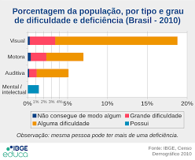

De acordo o artigo um da Convenção dos Direitos da Pessoa com Deficiência, proclamada pela ONU em 2006: “Pessoas com deficiência são aquelas que possuem impedimentos de origem física, mental, intelectual ou sensorial, onde, em interações com diversas barreiras, podem obstruir sua participação plena e efetiva na sociedade com as demais pessoas”.
Segundo o Censo do IBGE (2010), quase 46 milhões de brasileiros, aproximadamente 24% da população, declarou ter algum grau de dificuldade em pelo menos uma das habilidades investigadas (enxergar, ouvir, caminhar ou subir degraus), ou possuir deficiência mental / intelectual. Se considerarmos somente os que possuem grande ou total dificuldade nessas mesmas áreas, temos mais de 12,5 milhões de brasileiros com deficiência, número que correspondente a 6,7% da população do país.
O fato de existir essa grande quantidade de pessoas com deficiência (PcD) no Brasil serve como motivação para a implantação de políticas públicas e ações que tenham como objetivo a inclusão dessas pessoas. Assim, se faz necessário o desenvolvimento de toda uma estrutura jurídica e legislativa com o objetivo de garantir o respeito e condições de acesso e participação das PcD dentro dos aspectos da sociedade.
Durante o período colonial do país (1500-1815), houve a total exclusão e segregação social das pessoas com deficiência. Elas eram confinadas pelas suas próprias famílias, ou eram abrigadas em Santas Casas ou em prisões, já que as deficiências eram tratadas com discriminação, preconceito e rejeição pela sociedade.
Isso começou a mudar a partir do século XIX, com a vinda da Corte Portuguesa ao país, quando medidas de acolhimento e não apenas de exclusão se iniciaram por parte do poder público.
Em 1841, foi publicado o Decreto nº 82, fundando o primeiro hospital destinado para o tratamento de “alienados” (pessoas consideradas inválidas e loucas), denominado de Hospício Dom Pedro II, no Rio de Janeiro.
Isso porque a deficiência intelectual era considerada uma forma de loucura, passando a ser tratada em hospícios. Mais tarde, em 1854 e em 1856, foram fundados o Imperial Instituto dos Meninos Cegos e o Imperial Instituto dos Surdos-Mudos, voltados para a educação de deficientes visuais e auditivos no país.
As ações do Estado brasileiro em relação às pessoas com deficiência continuaram por muito tempo pautadas em tratamentos assistenciais, esses não foram eficazes no combate à discriminação, fazendo com que as pessoas com deficiência no Brasil continuassem sem seus direitos políticos e civis reconhecidos.
A primeira Constituição a incluir de maneira indireta as PcD em seu texto foi a Constituição de 1934, ao garantir o “amparo aos desvalidos”, reconhecendo-os como de responsabilidade dos entes públicos.
O grupo dos “desvalidos” era formado por pessoas que se encontravam em situação de abandono, miserabilidade e eram ignoradas pelo coletivo, como os pobres e as PcD.
Sendo assim, foi apenas na segunda metade do século XX que as PcD tiveram os seus direitos fundamentais reconhecidos no país, muito em vista da luta e reivindicação de movimentos sociais e políticos das pessoas com deficiências no Brasil.
A Constituição de 1988 é a responsável por assegurar todo os direitos fundamentais (direito à vida, saúde, educação, justiça, trabalho, seguridade social, transporte, direitos civis e políticos) às pessoas com deficiência no Brasil. Nela é declarada a proibição de diferença de salários, de exercício de funções e de critérios de admissão por motivos de gênero, orientação sexual, etnia, idade, cor ou estado civil, sob as penas que a lei definir.
Também é determinado por esta constituição que o poder público deve oferecer assistência, proteção, garantia e integração social das PcD. Esse fato pode se dar a partir de cargos públicos destinados às PcD e critérios específicos para a aposentadoria dessas pessoas.
Outro documento fundamental, a Lei Brasileira de Inclusão, ou como é chamado Estatuto da Pessoa com Deficiência, foi instituído em 2015, neste são previstos dispositivos responsáveis pela garantia de aspectos básicos direcionados às PcD (educação, saúde, moradia, trabalho, etc).
Além desses dois importantes documentos para as pessoas com deficiência no Brasil, muitas leis federais dispõem atualmente sobre os seus direitos. Para facilitar a compreensão vamos ver algumas delas a seguir:
Lei nº 7.853/1989 – Primeira lei brasileira a estabelecer normas para a execução dos direitos individuais e sociais das PcD;
Estatuto da Criança e do Adolescente (ECA) – A partir de sua criação em 1990 ficou definido que é dever do estado garantir que crianças e adolescentes com deficiência recebam atendimento médico e educacional especializado;
Lei nº 8.213/1991 – Responsável pela determinação do regime de cotas para PcD, estabelecendo que, empresas com mais de 100 funcionários devem preencher de 2% a 5% dos seus cargos com pessoas com deficiência.
Lei nº 8.742/1993 – Responsável pela garantia de um salário-mínimo mensal às PcD que comprovem não possuir outro meio de sustento.
Lei nº 10.048/00 – Garante a prioridade de atendimento às PcD em espaços, empresas e serviços públicos.
Lei nº 10.098/00 - Determina a eliminação de barreiras e obstáculos em espaços públicos, construções, edifícios e nos meios de transporte e de comunicação, que dificultem ou impossibilitem o pleno acesso das pessoas com deficiência.
Lei nº 10.436/02 – Estabelece que instituições públicas e empresas prestadoras de serviços públicos de assistência à saúde devem garantir que pessoas com deficiência auditiva possuam o atendimento adequado.
Mesmo após tantas conquistas, a verdadeira situação das PcD no país ainda não é ideal. De acordo segundo o Instituto Nacional de Estudos e Pesquisas Educacionais Anísio Teixeira (Inep), em 2018, apenas 43.633 pessoas com deficiência estavam matriculadas em instituições de ensino superior no país.
Para efeito de comparação, de acordo com o Censo da Educação de 2019, existem cerca de 8,6 milhões de estudantes matriculados no ensino superior no Brasil, onde as PcD representam 0.5% do total.
Estes dados mostram que, uma parcela mínima da população com deficiência possui acesso ao sistema de educação e chega ao diploma de ensino superior.
No quesito economia, segundo o Cadastro Geral de Empregados e Desempregados (Caged), o Brasil possuía 442.007 pessoas com deficiência empregadas no ano de 2018, representando assim 1% do total de PcD no país e do total de empregados com carteira assinada em 2018. Desse modo, é perceptível a dificuldade de inclusão destas pessoas no mercado de trabalho.
Associação de Pais e Amigos dos Excepcionais (APAE Brasil);
Instituto Brasileiro dos Direitos da Pessoa com Deficiência (IBDD)
Associação Mineira de Reabilitação (AMR)